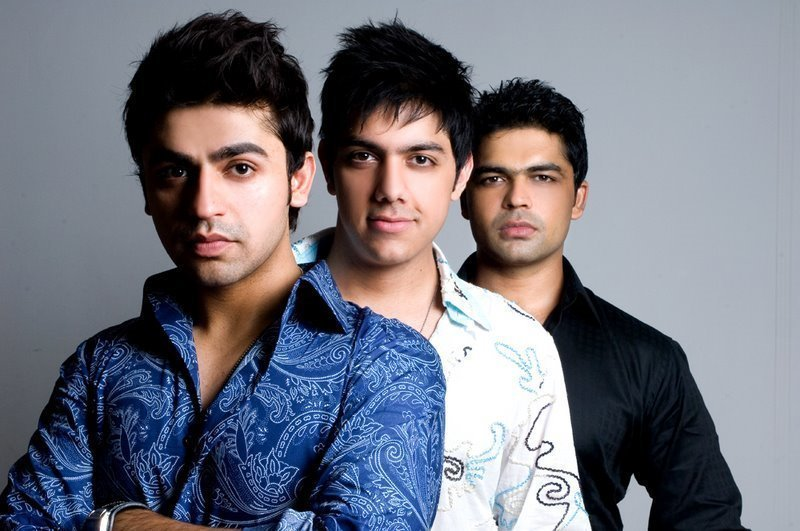

|
Jal - The Music
JAL’s sound primarily falls in the pop/soft rock genre. Playing along the lines of Latin-acoustic guitars; the main emphasis of their music is on the melodies and the lyrical content. Keeping their songs melodious and catchy at the same time the band believes that music is truly the world’s universal language capable of bringing our hearts and souls together.
Biography
AL was formed in Lahore in 2002. When Goher Mumtaz composed his first song by the name of “AADAT” soon after, began his search for like minded musicians to complete his band. He ran into Shazi (Aamir) – A bass guitarist and after a few jamming sessions he invited Shazi to join JAL, and together they went about looking for a vocalist. Some time later Goher heard Atif singing in a local college music competition, impressed by his vocal range he offered Atif to join the band and to do vocals for the song “AADAT”. JAL’s first single “AADAT” was released in DEC 2003. Before the release of its video “AADAT” was released on the internet through a local Pakistani web portal. The song enjoyed the status of the most downloaded Pakistani song on the internet for quite some time and was extensively popular by the time the video was released.
|
|
|
|  |